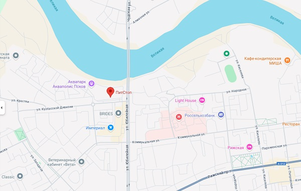

СТАНЬ ПИЛОТОМ СПОРТИВНОГО КЛУБА
КАРТИНГА "GO KART RC"
- Профессиональный тренерский состав
- Небольшие группы
- Подход к каждому пилоту
Если ты еще не испытал этот незабываемый опыт, то упустил возможность почувствовать это своеобразное ощущение свободы, мощи и азарта.
Наш клуб считается одним из лучших в Псковской области, поскольку вместо скучных тренировок мы используем игровые методики, которые вызывают интерес у каждого ребенка.
Наши тренеры постоянно развиваются, каждый год мы все проходим обучающие курсы, семинары в области картинга, чтобы всегда было вдохновение и новые перспективные идеи в голове, для реализации их на трассе. С ребятами всегда занимаются 2 тренера, чтобы уделить всем детям еще больше внимания!
Главные тренеры имеют лицензии и/или педагогическое образование.
Наши пилоты всегда в призерах городских и областных соревнованиях. Наши дети успешно выступают и занимают призовые места на Российских и международных соревнованиях.
"Добившись чего-то, ты всегда чувствуешь опустошение, но именно это и заставляет тебя побеждать снова."
" Михаэль Шумахер "
| Услуга | Длительность | Стоимость |
|---|---|---|
| Разовое вождение без тренера | 25 мин | 2000 р |
| Абонимент на месяц | 12 занятий по одному часу | 9000 р |
| Абонимент на 6 месяцев | 12 занятий в месяц по одному часу | 47000 р |
| Абонимент на 12 месяцев | 12 занятий в месяц по одному часу | 90000 р |
6,5 л.с.
16 детских картов
8,6 л.с.
23 взрослых картов
16 л.с. (при наличии клубных прав)
16 спортивных картов
8,6 л.с.
16 взрослых картов
Наш телефон: +7 800 893 29 21
Если вы интересуетесь автоспортом, наверняка не раз слышали совет: «тормози как можно позже». На первый взгляд, звучит логично: позже начал тормозить — дольше ехал быстро. Но на деле — это одна из самых опасных и бесполезных рекомендаций, особенно для тех, кто хочет действительно улучшить своё вождение. Разберёмся, почему так, и что на самом деле стоит учитывать, подходя к каждому повороту. Почему позднее торможение — не Главная проблема — слишком позднее торможение почти всегда приводит к ошибкам, которые потом уже невозможно исправить в рамках одного поворота. Что происходит: Вы входите в поворот с слишком высокой скоростью Вынуждены резко менять траекторию Машина плохо поворачивает И самое главное — вы не можете рано начать разгон на выходе А это значит: вы теряете не только на повороте, но и на всей прямой, которая идёт после него. Даже разница в 1-3 км/ч на выходе может привести к потере нескольких десятых секунды — потому что вы всё это время разгоняетесь медленнее, чем могли бы. Почему вообще этот совет стал популярным? Есть несколько причин: Фраза звучит круто Желание быть быстрее любой ценой Многие пилоты начинают тормозить всё позже, надеясь сэкономить секунды. В итоге — торможение «в последний момент», потеря контроля и плохой выход из поворота. Непонимание, где реально теряется время Кажется, что главное — это агрессивный вход. А на деле почти всё время теряется на выходе, потому что вы не можете сразу начать разгоняться. Как правильно определять точку торможения? Всё просто: думайте не о том, где тормозить, а о том, как быстро выйти из поворота. Представьте круг на трассе: больше всего расстояния — это прямые. И именно на них машина набирает максимальную скорость. Поэтому чем быстрее вы выйдете из поворота, тем больше выиграете на прямой. Нужно перестроить мышление: Ваша цель — не поздно затормозить, а как можно раньше Что делать на практике? Разберём три основные ситуации: 1. Одиночный поворот Если после поворота идёт длинная прямая, ваша задача — быть на газу уже до прохождения апекса (внутренней вершины поворота). Если вы всё ещё тормозите или только начинаете ускоряться — вы тормозили слишком поздно. 2. Длинный поворот или поворот с двумя апексами Здесь вы начинаете разгон между апексами или чуть до второго апекса. Главное — не «зависать» в повороте и не тянуть с разгоном. 3. Связка поворотов Важно ориентироваться не на каждый поворот отдельно, а на последний поворот в связке — ведь именно после него идёт прямая. Остальными поворотами лучше немного «пожертвовать», чтобы выйти из последнего максимально быстро. Как понять, что вы тормозите слишком поздно? Вот простые признаки: Вам приходится долго ждать, прежде чем нажать газ после поворота Машина долго не разворачивается в нужном направлении Вы чувствуете, что упускаете темп, особенно на прямых после поворота Скорее всего, причина — слишком позднее и слишком резкое торможение . Попробуйте наоборот — начать тормозить чуть раньше и мягче. Вы удивитесь, как сильно это повлияет на результат. Подведём итоги: Выход из поворота — важнее, чем агрессивный вход Позднее торможение редко даёт выигрыш, а вот времени теряется много Начинайте торможение чуть раньше, чтобы получить лучший угол и раньше нажать газ Фокусируйтесь на прямых — там вы выигрываете основное время круга Запомните главное: Тормозите настолько поздно, насколько это позволяет выйти из поворота как можно быстрее. Не бойтесь «потерять» чуть-чуть на входе — вы отыграете это с лихвой на выходе и следующей прямой.
Считается, что в поиске быстрого круга, есть три области для концентрации своих усилий. Во-первых, необходимо найди наиболее выгодную траекторию. Эта линия оказывает глубочайшее влияние как на скорость прохождения поворота, так и на максимальную скорость, которую вы можете достичь на прямой. Вторым приоритетом является обладание навыками, которые необходимы, чтобы удержать карт на этой траектории, и быть так близко к лимиту машины насколько вообще это возможно, чтобы пронести оптимальную скорость через поворот и использовать ее как стартовую скорость при выходе на прямую. Третья область это способность быстро замедлить машину до оптимальной скорости входа в поворот. Похоже, что в этих трех пунктах заключена вся база кольцевых гонок. Попробуем разобраться почему же эти три области так важны и постараемся понять как талантливые гонщики обращаются с разгоном, торможением и прохождением поворота в попытке минимизировать свое время круга. Для начала давайте определимся с фундаментальной целью пилота в кольцевых гонках: попадая на извилистое полотно трека, вам необходимо придумать как объехать его за минимально возможное время. Это всегда проблема о минимизации времени. Поработаем возможно с одним из самых простых треков, состоящим из 6 поворотов (5 правых и одним левым). Чтобы начать наши рассуждения, давайте разделим трек на секции: прямые и повороты.
Итак, что же такое предел? Спросите 10 пилотов и скорее всего вы получите 10 разных ответов. Мы можем дать такое определение пределу — это когда продолжение действия пилота уже не приводит к необходимому увеличению сил, действующих на карт. Звучит немного странно, но простой пример поможет раскрыть это определение. Представим пилота, который движется на постоянной скорости и медленно поворачивает руль. В определенный момент возникнет ситуация, когда дальнейший поворот руля перестанет оказывать воздействие на карт и он не сможет уменьшать радиус поворота, делая его острее. Резина достигла своего предела. В этом примере передние колеса достигли своего предела раньше, и многие пилоты распознают недостаточную поворачиваемость. Если бы задние колеса достигли своего предела раньше, то мы бы имели дело с избыточной поворачиваемостью. Ключ к пониманию здесь, что в любой момент, когда вы на пределе, вы будете либо с недостаточной, либо с избыточной поворачиваемостью. Конечно, в теории идеально использовать все четыре колеса равнозначно, но технически крайне трудно достичь нейтральной поворачиваемости и одновременно держать на пределе как передние, так и задние колеса. В лучшем случае это будет переход между состояниями и как вы увидите в дальнейшем, на самом деле невозможно точно понять, действительно ли вы находитесь на пределе всех четырех колес в случае нейтральной поворачиваемости. Если вы думали, что смогли достичь идеального нейтрального баланса, то это просто означает, что вам не удалось еще развить такой острой чувствительности недостаточной или избыточной поворачиваемости. Тестирование Хорошо, мы осознали, что нам требуется быть на пределе недостаточной или избыточной поворачиваемости в повороте, но как мы можем убедиться, что фактически достигли его? Представим, что вы едете в повороте и думаете, что, вероятно, находитесь на пределе сцепления резины. Но на чем основана ваша уверенность? Какие сигналы и ощущения сопровождают вас и дают вам эту уверенность? Оказывается, ответ достаточно простой, хотя часто не интуитивный. Единственный способ точно убедиться, что вы на пределе это изменить ваше воздействие на карт и посмотреть, что произойдет. Попробуйте больше повернуть руль. Пошел ли карт по более узкой траектории? Если да, вы не достигли предела. Карт перестал поворачивать и ехать быстро? Вероятно, вы на пределе или за ним, вероятнее всего за ним. Нахождение за пределом обычно считается плохой практикой, но единственный способ выяснить как далеко вы зашли за предел это распустить руль до момента, когда карт уменьшит немного степень своего вращения. Вы должны внести изменения в управление и посмотреть, что произойдет. Мы на самом деле немного забегаем вперед, так как мы не полностью готовы окунуться в специфические сигналы и действия пилота. Мы привели этот пример, чтобы подчеркнуть, что единственный способ узнать действительно ли вы на пределе или нет – это менять взаимодействие с картом и считывать обратную реакцию. Этот процесс можно назвать тестированием. Для пилотирования на пределе вы должны постоянно тестировать, чтобы понимать можете ли вы добиться большего от резины. Это одна из причин почему вы часто можете наблюдать у топовых пилотов постоянные, небольшие движения рулем во время прохождения поворота. Тестирование так же можно выполнять с помощью педали газа или тормоза. Например, во время выхода из поворота, вы можете тестировать границы предела с помощью руля или педали газа, или одновременно, используя как газ, так и руль, но с меньшими воздействиями. Аэртон Сенна был известен своеобразной манерой обращения с педалью газа во время прохождения поворота, что помогало ему лучше тестировать границы предела и в меньшей степени использовал руль для этого.
Сегодня мы поговорим о траектории. Информация будет для тех, кто уже немного понимает основы – что такое траектория и почему важно не отклоняться от нее. Постараемся углубиться в понятие чуть глубже и раскрыть небольшие секреты. Когда мы показываем пилоту определенную траекторию, мы прежде всего опираемся на быстрых пилотов, которые уже эффективно используют ее. Здесь нет никакой магии и особого чутья, это всего лишь про способность копировать. Однако, это знание не сильно вам поможет, потому что трудно придерживаться траектории быстрых пилотов, если вы не понимаете, что на самом дели они пытаются достичь. Другими словами, вам нужно знать, ПОЧЕМУ они используют именно эти траектории, прежде чем вы действительно сможете овладеть искусством копирования и сможете заставить работать его на ваше благо. Эта работа по поиску причин почему быстрые пилоты едут именно так будет обучать вас гораздо эффективнее любых других способов. И в конечном счете даст вам возможность использовать ваши знания в любых ситуациях. Таким образом, когда вы видите пилота, который использует определенную траекторию, вам требуется понять, где он пытается получить выигрыш от своего подхода, жертвует ли он ранней стадией поворота, чтобы получить выигрыш на выходе или действует наоборот. Вот, ряд ключевых моментов за которыми стоит наблюдать у быстрых пилотов: 1) Как поздно или рано они тормозят? Если вы видите ранее торможение, значит ключ к прохождению поворота – хороший выход. Если торможение позднее, значит они пытаются получить выигрыш времени на входе в поворот 2) Какой апекс они берут: ранний, средний или поздний? Если видим ранний апекс, значит требуется быстрый вход, и выход не так важен. Поздний апекс сигнализирует о концентрации на скорости выхода из поворота или на оборотах двигателя в его середине. Средний апекс – что-то среднее между двумя этими подходами 3) Слышите ли вы где они встают на газ, до или после апекса? Сконцентрируйтесь на звуке двигателя, это и будет ответом на вопрос. Делают ли они это раньше, чем вы? 4) Обратите внимание на руль. Видите ли вы корректировки в середине поворота? Наблюдение за рулем поможет понять, что пилот пытается достичь в каждый момент времени в повороте 5) Ускоряется ли машина на выходе по прямой или распускается максимально широко? Если вы видите широкий выход, значит они беспокоятся об оборотах двигателя, которые упали слишком низко во время прохождения середины поворота Вы можете стоять и наблюдать за пилотами, задавая себе эти вопросы, и, если вы найдете ответы на эти вопросы, вы сможете в конечном счете узнать больше, чем пилот, за которым вы наблюдаете. Мы часто хвалим пилотов за траекторию, а они пожимают плечами, потому что даже не осознают почему именно эта траектория лучшая.
Многие пилоты используют визуализацию в своем уме, чтобы познакомиться с треком и подготовить свою технику пилотирования перед реальным выездом. Однако, это техника всего лишь одна из многих. В общем случае, ментальная тренировка может использоваться чтобы: Привить успех – проигрывая в голове свой прошлый успех, пилот может укреплять веру в свои способности. Эта уверенность по поводу своих способностей один из ключевых факторов успеха. Возможно даже более важный, чем естественный талант или наработанные навыки. И эта вера может быть улучшена с помощью ментальных тренировок. Найти мотивацию – припоминая свое эмоциональное состояние во время успешных заездов в прошлом, и проецируя его на будущие события, пилот может напомнить себе о том, что наиболее сильным образом мотивирует его участвовать в гонках. Когда события развиваются не самым лучшим образом, способность сфокусироваться на своей мотивации может приводить к превосходным результатам. Улучшить навыки – если пилот обладает способностью ярко воспроизводить картинку, чувство и звук в своей голове, тренируя необходимый навык, то вероятность, улучшения этого навыка на треке становится выше. Знакомство с треком- пилот может использовать свое воображение, чтобы проезжать тысячи кругов по треку изучая его в первое время. Запуск концентрации – ярко припоминая свои ощущения в прошлом, которые сопутствовали успеху, почти невозможно не привести свой разум в особое состояние. Со временем это можно привязать к определенному слову или движению, и тогда, буквально, произнеся всего лишь одно слово, вы будете выводить свой организм на небывалый пик производительности и концентрации. Программирование поведения – пилоту необходимы различные программы поведения для различных ситуаций. Проигрывая эти ситуации и адаптируя свои действия под них, пилот улучшает свою способность действовать идеально независимо от обстоятельств – где-то более агрессивно, где-то более терпеливо. Планирование – хотя количество ситуаций, которые могут случиться на треке, стремится к бесконечности, рассматривание как можно большего количества вариантов, позволит вам действовать в определенных обстоятельствах быстрее, аккуратнее и увереннее. Например, подготовка различных вариантов, которые могут случиться на старте позволят выработать уверенность вида «чтобы не случилось – я готов к этому». Восстановление концентрации – если вы сформировали ментальное видение вашего поведения на треке в случае возникновения проблем, особенно в случаях, когда вы теряете голову и концентрацию, вы сможете в нужный момент вызвать эту программу и с гораздо меньшим усилием восстановить свою концентрацию в заезде.
Если по каким-либо причинам вы фанатеете от автоспорта и в частности от картинга и хотели бы быть причастными, то это обращение для вас! Дело в том, что в нашу команду требуется младший механик. Младший не по возрасту, а прежде всего исходя из опыта. В идеале: вы любите картинг у вас системное мышление любите и разбираетесь в механике у вас нет гоночного опыта. Гоночный опыт не требуется так как у нас множество своих «фишечек» и нам хотелось бы передать свой опыт и обучить своей системе работы. Мы предлагаем работу в составе гоночной команды , где у вас будет возможность не только заниматься любимым делом, получать за это оплату и участвовать в гоночном процессе в составе технической части команды, но и возможность освоить знания и навыки необходимые для гоночного механика/инженера. При этом вы будете работать в том числе и с чемпионскими машинами. Если вы успешно пройдете стартовый этап, то перед вами открывает карьера профессионального гоночного механика/инженера. А это: любимое дело поездки по городам России эмоциональные гоночные уикэнды очень тесное и крепкое сообщество картингистов